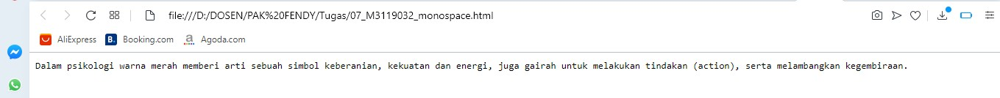

Monospaced Font
Monospaced Font digunakan jika ingin mempublish code yang digunakan dalam Web tersebut dengan
format font yang berbeda dari text yang ditampilkan dalam web tersebut.
Codingan
<!DOCTYPE html>
<html>
<head>
<title>Monospaced Font</title>
</head>
<body>
<code>
Dalam psikologi warna merah memberi arti sebuah simbol keberanian, kekuatan dan energi,
juga gairah untuk melakukan tindakan (action), serta melambangkan kegembiraan.
</code>
</body>
</html>
Hasil codingan

Analisis
Monospaced Font digunakan jika ingin mempublish code yang digunakan dalam Web tersebut dengan format
font yang berbeda dari text yang ditampilkan dalam web tersebut.
Back